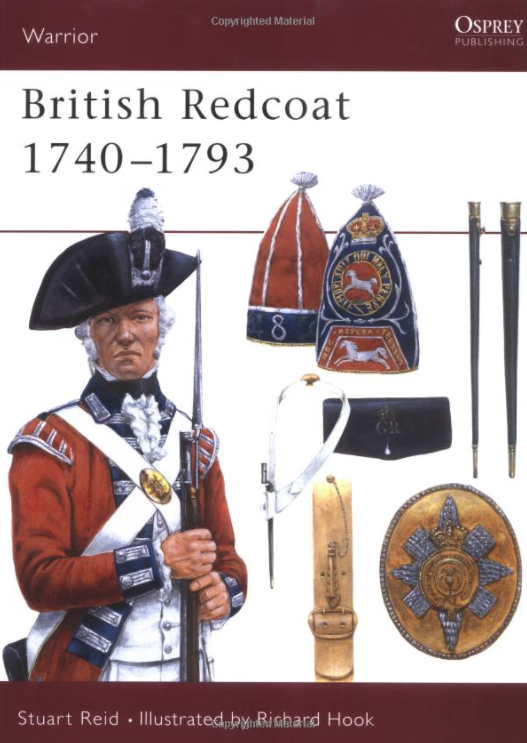
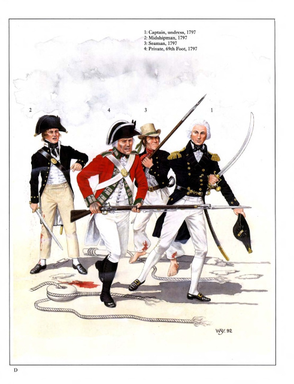
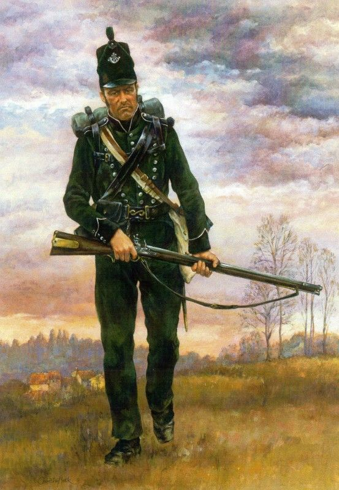
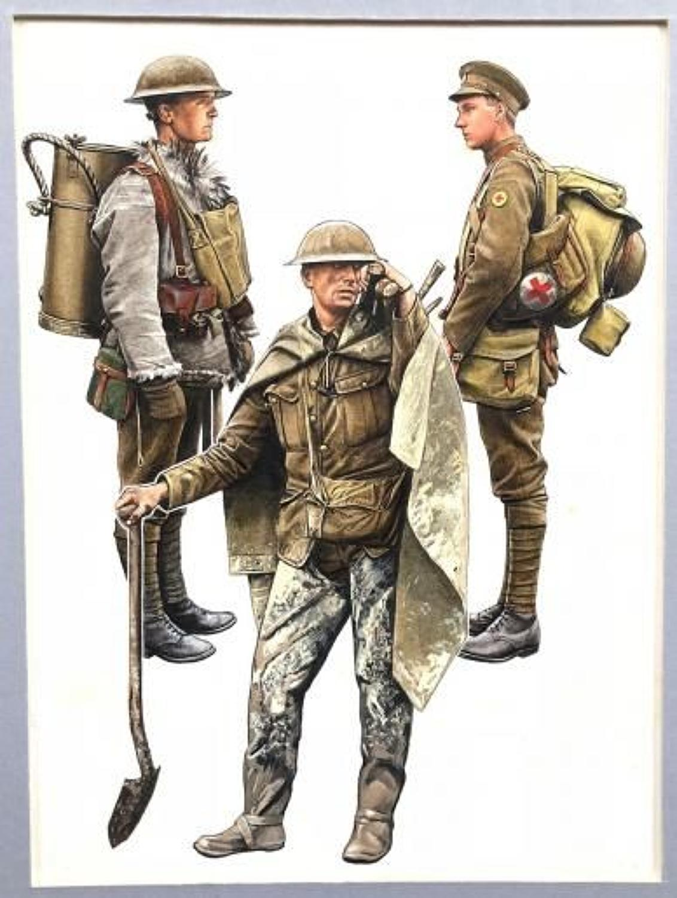
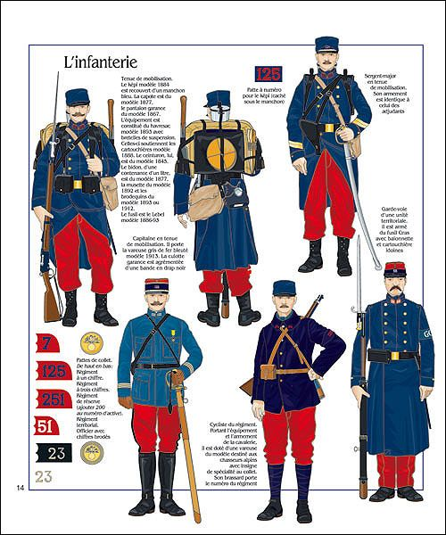
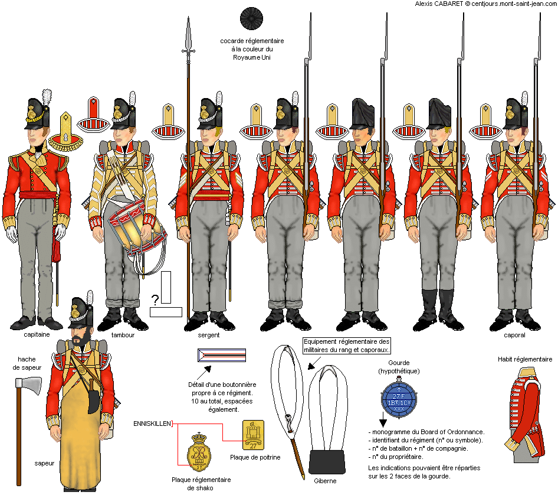
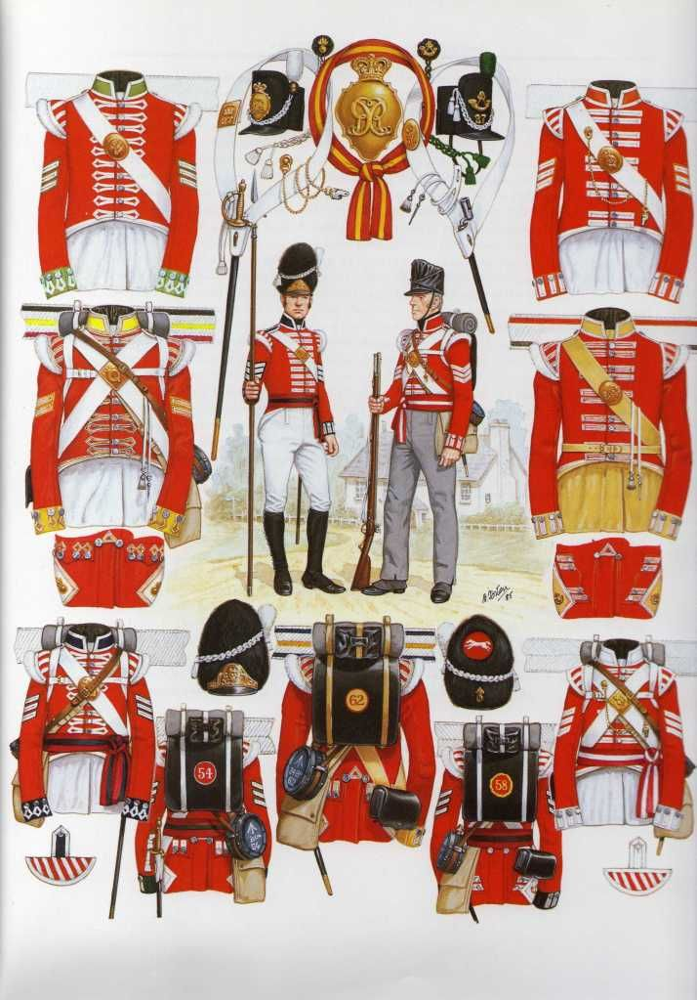

영국군은 레드를 입는다
게시: 2021-05-20T06:30:56+09:00
영국 육군은 별명은 redcoat 입니다. 붉은색 코트는 꼭 영국군만 입었던 것은 아닙니다만, 특히 미국 독립전쟁 때 미국인들에게 영국군 = '붉은 우와기'로 알려진 이래, 레드코트는 곧 영국 육군을 뜻하는 대명사로 굳어졌습니다. 생각해보니 영국 축구 국가 대표팀도 붉은색 저지를 입네요. 현재 전세계에서 붉은색 군복을 입는 군대는 전혀 없습니다. 이유는 간단합니다. 자동화기가 휩쓸고 다니는 현대의 전장에서 그렇게 눈에 잘 띄는 차림새를 하고 돌아다니면 당장 벌집이 될 테니까요.

하지만 나폴레옹의 위명이 천하를 뒤덮던 19세기초 유럽 전장에서는 붉은색 군복을 입고 다녀도 크게 문제가 되지 않았습니다. 당시 머스켓 소총의 형편없는 유효 사거리와, 또 1분에 2발 정도라는 느린 발사 속도로 인해 위장색이 전혀 필요가 없었기 때문입니다. 머스켓 총알이 날아오는 전쟁터에서 필요한 것은 적의 시야에 잘 들어오지 않는 위장색보다는, 바로 옆의 동료가 비명을 지르며 쓰러져도 꿋꿋이 대오를 지키며 전진할 수 있는 사기와 규율이었습니다. 원래 사람이라는 동물이 의외로 단순해서, 번쩍이는 멋진 제복을 입으면 사기 수치가 조금 높아지게 되어 있거든요. 그래서 예로부터 군인, 특히 장교들의 군복이나 갑옷은 될 수 있는 대로 화려하게 만들었습니다. 뭐 영국군만 요란하게 입은 것은 아니었습니다. 프랑스군은 파란색을, 프러시아군은 짙은 녹색을, 오스트리아군은 흰색 코트를 입었습니다. 또 같은 영국 내에서도 영국 육군이나 해병대는 붉은색 코트였지만 해군 장교들은 파란색 코트를 입었습니다. 게다가 포병이나 엔지니어들은 또 파란색이었고, 일반 보병 중에서도 라이플 연대원들도 짙은 녹색 코트를 입었습니다.

(왼쪽부터 영국 해군 사관후보생, 영국 육군 전열보병, 영국 해군 수병, 영국 해군 함장입니다.)
그렇다면 영국군은 언제부터 레드코트를 입기 시작했을까요 ? 에드워드 흑태자가 크레시 전투에서 프랑스군을 무찌를 때부터는 확실히 아니었겠습니다만, 상당히 꽤 오래 전부터라고 합니다. 위키를 찾아보니까, 1645년 잉글랜드 의회에서 '신육군규정'을 만들면서, 그 보병들은 베네치아 레드를 입게 했다는 것이 최초의 공식 기록이라고 합니다만, 실은 그 전부터 입었다고 하네요. 또 나올 수 있는 질문은, 왜 하필 붉은색이냐 하는 것입니다. 일부에서는 피와 상관이 있다고 합니다. 즉, 옆의 동료가 총에 맞아 피를 흘려도, 어차피 붉은색 코트이기 때문에 눈에 잘 띄지 않아, 병사들의 사기가 꺾이는 것을 막아준다고들 합니다. 하지만 이건 그냥 하나의 '설'일 뿐입니다. 그게 사실이라면 왜 영국군의 바지는 흰색이나 회색이겠습니까 ? 영국군이 붉은색을 선호한 진짜 이유는 의외로 단순하다고 합니다. 당시 붉은색 염료가 가장 가격이 쌌다고 하네요. 이 튀는 붉은색 코트에 대한 첫번째 도전은 미국 독립전쟁 때 시작됩니다. 평상시 하던 대로, 넓은 평원에서 길게 횡대를 이룬 병사들을 마치 인간의 벽처럼 늘어세우고 전투를 벌이려던 영국군은, 북아메리카의 어두컴컴한 숲 속에서 소규모 부대로 게릴라 전을 펼치는 '멜 깁슨'을 만난 것입니다. (다들 영화 '패트리어트' 보셨나요 ?) 이렇게 쓴 맛을 보고 얻은 교훈으로, 영국군은 미국 현지에서 왕당파들을 모아 '로열 아메리칸 라이플 연대'를 최초로 만듭니다. 이들은 밀집 부대가 아닌, 소부대 단위로 전투에 임했고, 어두운 숲속에서 어느 정도 위장색 효과를 내도록, 위에서 언급한 대로 짙은 녹색 군복을 입었습니다.

(영국 육군 라이플 연대의 병사입니다.)
하지만 20세기 초반까지도, 후장식 라이플 소총이 분당 12발을 쏟아낼 때까지도 영국군은 자랑스러운 레드코트를 포기하지 않았습니다. 1900년 즈음에 남아프리카에서 보어 전쟁이 터지지 않았다면, 영국 육군은 제1차 세계대전 때 독일군 기관총을 향해 역시 레드코트를 입고 전진할 뻔 했습니다. 다행인지 불행인지, 네덜란드 식민지인들의 후손인 보어인들이 후장식 라이플 소총의 쓴 맛을 보여준 덕택에, 영국군은 1902년 마침내 레드코트를 포기하고 멋대가리없는 카키색 군복을 정식으로 채택하게 됩니다.

(그 간지나던 레드코트를 포기하고...T T) 하지만 프랑스군은 보이인들을 만나보지 못했습니다. 그래서 프랑스 육군은 제1차 세계대전 초반에, 감색 줄무늬가 있는 붉은색 바지를 입고 독일군 기관총을 향해 걸어나가는 에러를 범했지요. 물론 기관총은 훌륭한 선생이어서, 프랑스 학생들도 재빨리 카키색 군복을 채택했습니다. 기관총 하니까 맥아더 장군의 명언 하나가 생각나는군요. "칼보다 펜이 더 강하다고 말한 사람은, 기관총을 만나보지 못했던 것이 확실하다."

(WW1 초창기의 프랑스 보병들의 바지 색깔 좀 보십시요.)
레드코트 이야기는 여기까지로 접고, 다음은 다른 것들을 살펴보지요. 당시 영국 육군 병사들은 80년대 우리나라 고등학생들보다도 더 심한 두발 및 복장 검사에 시달려야 했습니다. 저도 회사다니면서 와이셔츠에 넥타이 매고 다닙니다만, 그럴 때마다 대체 왜 이런 불편한 복장을 해야 하나 울화통이 터질 때가 많습니다. 그냥 티셔츠에 면바지를 입으면 아주 좋을 텐데요. 세상에 넥타이만큼 쓸모 없는 물건이 또 있을까요 ? 이런 복장에 대한 불평은 18~19세기 영국군에서는 훨씬 더 심했습니다. 먼저, 헤어 스타일입니다. 스포츠 머리를 해야 했느냐 하면 그렇지 않고, 오히려 반드시 길게 길러서 꽁지머리를 해야 했습니다. 와 간지나겠다 라고 하실 일이 아닙니다. 긴 머리를 올빽으로 팽팽하게 넘겨서 꽁지머리로 묶고, 그 꽁지 부분에는 묵직한 모래주머니를 겉에서는 보이지 않도록 묶어서 매달아야 했습니다. 이렇게 무거운 모래주머니를 달고 나면, 얼굴 피부가 뒤로 쫙 잡아당겨져서, 식사를 할 때 턱이 제대로 안 움직일 정도였다고 합니다. 게디가 머리 묶어보신 분은 아시겠습니다만, 머리 그렇게 쉽게 올빽으로 안넘어갑니다. 무스나 젤을 발라야 합니다. 당시에 무슨 무스나 젤이 있겠습니까 ? 양초나 냄새내는 비누를 막 쳐발라야 했습니다. 이렇게 queue라는 것을 묶는데 거의 1시간이나 걸렸답니다. 그러니까 당연히 너무 귀찮아서, 다시 묶는 것이 너무 귀찮아 한번 묶어놓으면 머리도 안감고 몇주씩 그냥 놔뒀다고 하네요. 또 모자 밖으로 나오는 부분의 머리카락은 밀가루로 하얗게 만들어야 했는데, 이것 역시 매일 하기가 귀찮으니까 위의 queue와 함께 그대로 내버려두는 경우가 많았습니다. 문제는 땀과 비듬에 쩔어서 발효되는 밀가루... 당연히 끔찍한 염증을 비롯한 온갖 질병의 원인이 되었습니다. 게다가 매일 밤마다 밀가루 갉아먹으려는 쥐들이 덤벼들어서 아비규환이 벌어지곤 했답니다. 게다가 귀 옆에는 반드시 곱슬머리를 반드시 길러야 했는데, 이렇게 원래 곱슬머리인 사람이 그렇게 많지 않았으므로 대개는 달군 쇠를 가지고 파마를 했습니다. 그 과정 중에 귀까지 지지는 경우가 많았음은 당연지사였겠지요. 나머지 군복의 악세서리를 다듬는 것도 쉽지는 않았습니다. 가슴을 가로질러 채우는 크로스 벨트와 금속제 버클, 그리고 단추는 흰색이었는데, 이것들을 모두 매일 아침마다 검열을 받았으므로 아침마다 파이프 클레이라는 백토로 반짝반짝 닦고 옷에도 얼룩이 없도록 해야 했습니다. 이걸 매일 하려면 보통 새벽 4시에 일어나서 준비를 해야 했다고 하네요.

(그나마 이들은 각반을 차지 않고 있으니 많이 편해진 복장입니다.)
하지만 가장 고통스러웠던 것은 stock이라고 하는 물건이었습니다. 이것은 목 뒤 칼라에 끼워넣어야 했던 폭이 10cm 정도 되는 두꺼운 가죽이었습니다. 굳이 필요도 없는 stock을 왜 끼우도록 강요했을까요 ? 이걸 끼운 칼라를 하고 있으면 고개를 항상 뻣뻣하게 유지했었어야 합니다. 군 수뇌부는 그걸 원했던 것이지요. 물론 장교들은 그런 불편한 것을 하지 않았습니다. (참 나쁜 놈들이지요 ?) 특히 덥고 습한 날씨에는 이 stock이 병사들을 미치고 환장하게 만들었습니다. 고참병들은 이 가죽의 윗부분을 깎아내어 그 가죽 높이를 조금 줄여서 목을 움직일 공간을 좀 만들었다고 하네요. 또 실전에 투입될 경우, 이걸 분실하면 얼마 안되는 일당에서 그 비용이 공제됨도 불구하고 대부분 그냥 버리고서 분실했다고 허위보고를 했다고 합니다. 또 병사들을 힘들게 했던 것이 가슴의 크로스벨트였습니다. 이걸 팽팽하게 차고 있으면 가슴이 너무 답답해서 숨쉬기가 힘들었다고 합니다. 특히 이거 하고 구보하면.... 거의 죽음이었다고 하네요. (그래서 영국군은 항상 뛰지 않고 걸었나봅니다...) 또 각반도.... 단추가 너무 많아서 이거 채우는데만도 15분이 걸렸다고 하네요. 그래서 아침에 시간 절약하려고 이거 안 벗고 그냥 자는 경우가 많았습니다. 그러다보니 역시 또 염증을 비롯한 피부병이 만발했다네요. 당시의 보통 병사들이 썼던 2각모나 척탄병들이 썼던 베어스킨(윈저궁 경비병들이 쓰는 곰가죽 모자)이나 공통점은 무엇이었을까요 ? 바로 턱끈이 없었다는 것이었습니다. 그러다보니, 조금만 바람이 불거나 움직임이 격렬해도 모자는 그냥 땅바닥으로 떨어졌습니다. 바람부는 날 연병장에서 제식 훈련을 할 때 하사관들이 미칠 지경이었다고 하네요. 툭하면 병사들의 모자가 땅바닥으로 우수수 떨어지니까요. 특히 잔가지가 많은 숲속으로 들어가는 경우는 거의 끝장이라고 보면 됩니다. 역시 고참병들의 경우 눈에 안띄게 머리 뒤쪽으로 가는 끈을 매달아 묶는 꼼수를 부렸다고 합니다.

왜 이런 불편한 복장을 병사들에게 강요했을까요 ? 글쎄요. 요즘 월급쟁이들은 왜 불편한 와이셔츠에 쓸데 없는 넥타이를 매고 다닙니까 ? ** 이건 제가 블로그 시작하던 거의 초창기, 그러니까 거의 20년 전에 Sharpe's companion이라는 샤프 시리즈 해설서를 보고 쓴 글이었습니다. 그 사이에 저희 회사에서도 와이셔츠와 넥타이는 거의 사라졌습니다. 세월이 참 빠르네요.